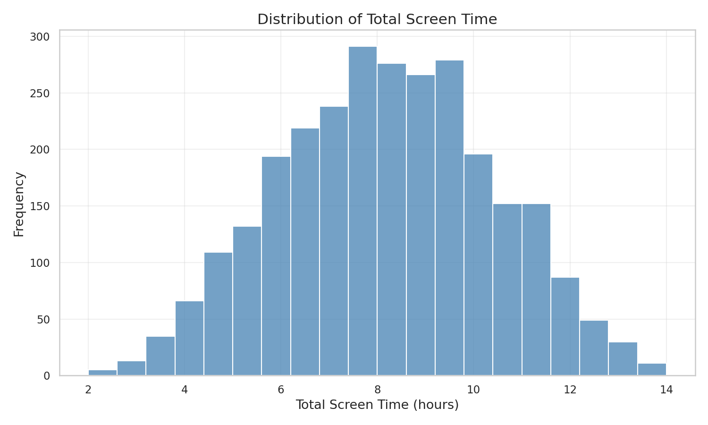

Seaborn Charts (Python)
Histogram – Total Screen Time
Box Plot – Work or Study Hours by Age Group

Strip Plot – Entertainment Hours

Dataset: Daily Screen Time Usage (2,800 records)
Variables used: total_screen_time, work_or_study_hours, entertainment_hours, social_media_hours
| Chart | Variable | Link |
|---|---|---|
| Histogram | total_screen_time | Open Histogram |
| Box Plot (with outliers) | work_or_study_hours by age_group | Open Box Plot |
| Strip Chart (with jitter) | entertainment_hours | Open Strip Chart |
| ECDF (Extra Credit) | social_media_hours | Open ECDF |
All P5 charts include interactive tooltips (hover to see values).